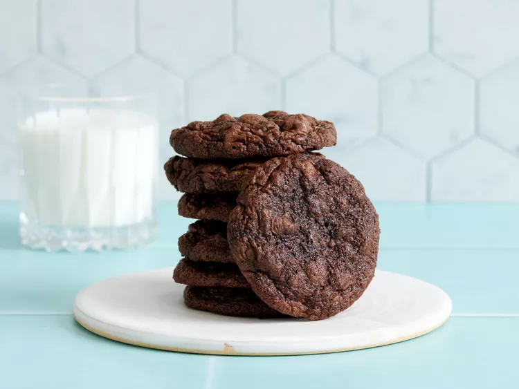
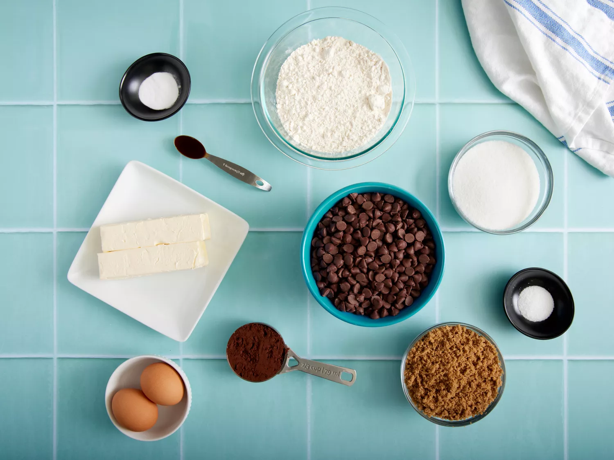
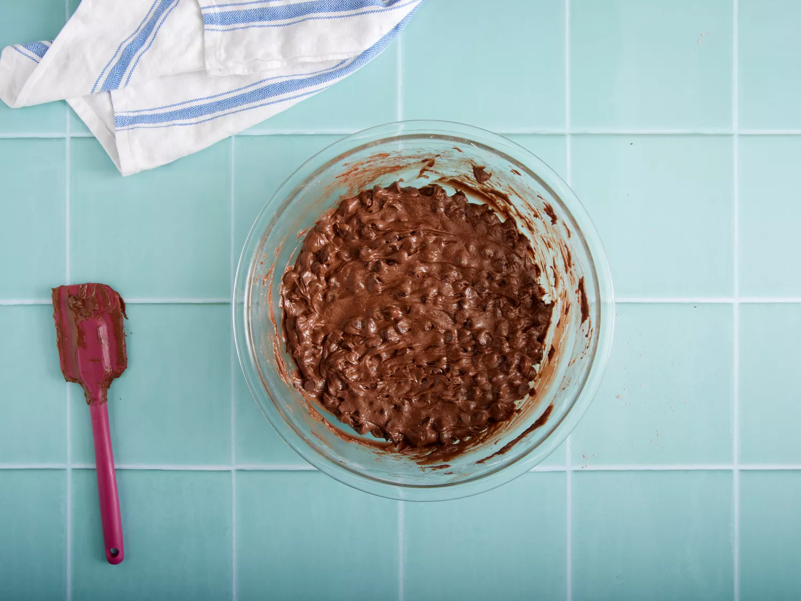
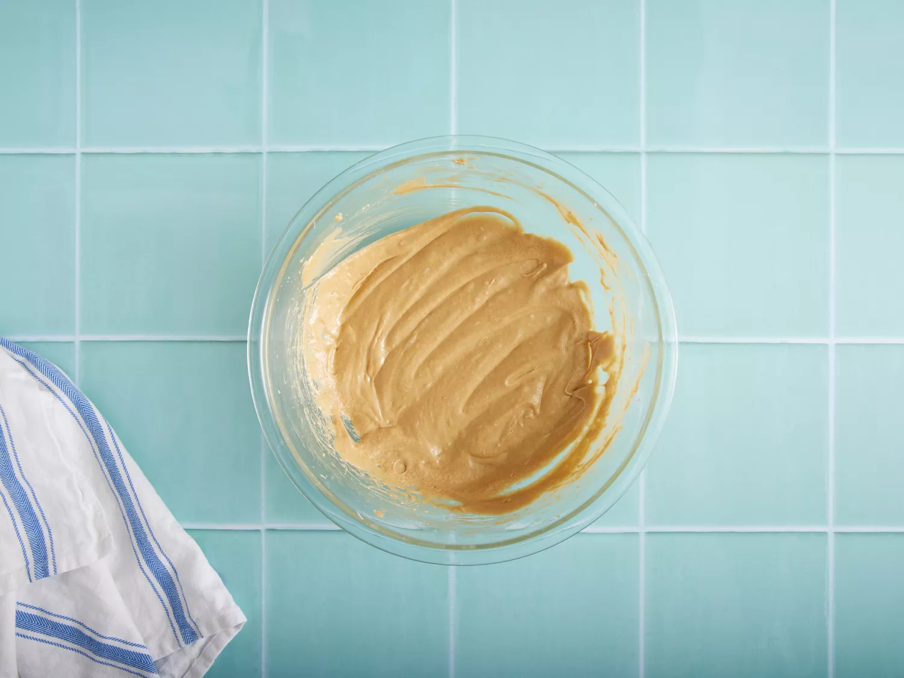
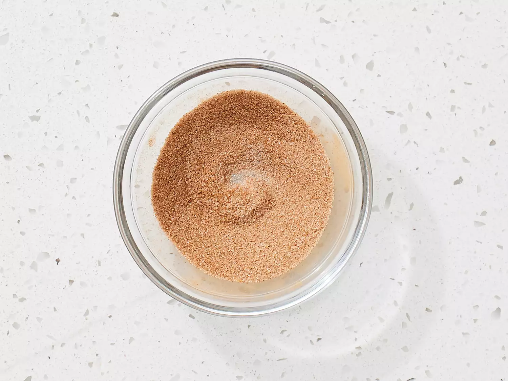
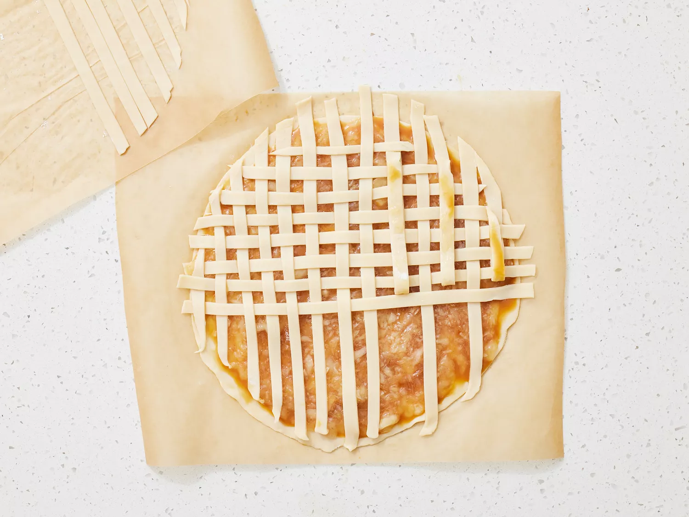
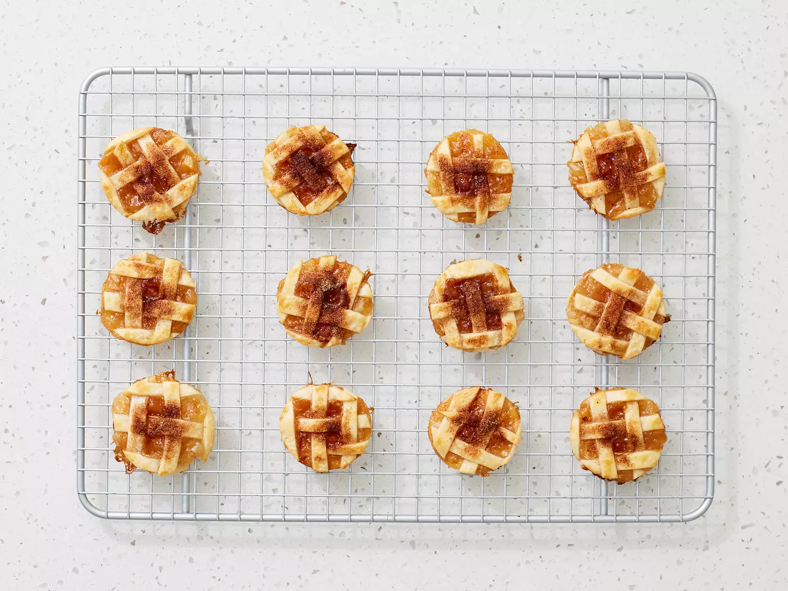
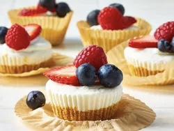

Double Chocolate Cookies
Origin: Michigan Source: Family Recipe Category: Dessert My daughter learned to make these cookies at a baking camp at Zingermanns and has tweaked the recipe to fit the taste buds of her siblings. They are extremely sugary so the salt helps to balance it. Note, these cookies are best eaten very quickly.
Recipe Ingredients
- Unsalted butter
- Granulated Sugar
- Packed light or dark brown sugar
- Large egg
- Pure vanilla extract
- Semi-sweet chocolate chunks (melted)
- All-purpose flour
- Natural unsweetened cocoa powder
- Baking soda
- Salt
- Semi-sweet chocolate chunks
Recipe Steps
- In a mixing bowl cream together the butter, granulated sugar, and brown sugar
- Add the egg and vanilla extract and beat well
- Add the melted chocolate
- In a separate bowl combine the flour, baking soda, cocoa powder and salt
- Combine the wet and dry ingredients
- Add the unmelted chocolate chunks.
- Form 15 cookies and place on a baking sheet.
- Cook for 12 to 13 minutes at 350 degrees.
Additional Food images
  Caramel Apple Pie Cookies
Origin: Michigan Source: Family Recipe Category: Dessert
My daughter learned to make these cookies at a baking camp at Zingermanns and has tweaked the recipe to fit the taste buds of her siblings. They are extremely sugary so the salt helps to balance it. Note, these cookies are best eaten very quickly.
Recipe Ingredients
- package rolled refrigerated unbaked pie crusts
- purchased apple pie filling
- caramel sauce
- apple pie or ground cinnamon
- sugar
- All-purpose flour
- Salt
Recipe Steps
- Gather all ingredients. Preheat oven to 425 degrees F (220 degrees C). Let pie crusts stand according to package directions. Line 2 baking sheets with parchment paper; set aside.
- Transfer apple pie filling into a food processor. Lightly pulse apple pie filling in a food processor until in 1/4-inch chunks
- Roll one pie crust into a 14-inch circle on a lightly floured piece of parchment paper.
- Using a pizza cutter or a sharp knife, cut 1/4-inch wide strips.
- Cover cut pie dough with parchment paper or plastic wrap and set aside.
- Roll remaining pie crust dough into a 13-inch circle on lightly floured piece of parchment paper.
- Spread caramel sauce over rolled pastry.
- Create a lattice top with dough strips by alternately placing strips on top of the filling.
- Using a 2 1/2-inch diameter cookie cutter, cut rounds from pastry. Transfer cookies to the prepared baking sheets.
- Stir together sugar and apple pie spice in a small bowl. Brush cookies with half and half and sprinkle cookies with sugar and spice mixture.
- Cool on baking sheets on wire racks for 20 minutes. Remove cookies to a serving tray and serve warm.
Additional Food images
  Mini No-Bake Cheesecakes
Origin: Michigan Source: Family Recipe Category: Dessert My daughter learned to make these cookies at a baking camp at Zingermanns and has tweaked the recipe to fit the taste buds of her siblings. They are extremely sugary so the salt helps to balance it. Note, these cookies are best eaten very quickly.
Recipe Ingredients
- Graham cracker crumbs
- Brown sugar
- Butter
- Heavy whipping cream
- Cream cheese
- Powdered sugar
- Fruit
- Sour cream
- Lemon juice
Recipe Steps
- For crust, combine graham cracker crumbs, brown sugar, and melted butter in a small bowl until evenly combined.
- Press 1 rounded tablespoon of crumb mixture evenly into the bottom of the prepared muffin pan. Freeze crusts until set while you prepare the filling, 15 to 20 minutes.
- Beat cream cheese and sugar in a large bowl on medium-high speed until smooth and creamy, about 2 minutes.
- Add the sour cream, lemon juice, and vanilla extract to the cream cheese mixture. Beat until combined, about 1 minute.
- Place the filling in a resealable 1 quart plastic bag. Snip off the corner of the bag to create a 1/2-inch opening.
- Pipe into prepared muffin pans, using about 2 1/2 tablespoons of mixture per cup. Smooth the tops as desired.
- Refrigerate, covered, for 3 hours or up to 5 days. Top with fresh berries or toppings of your choice.